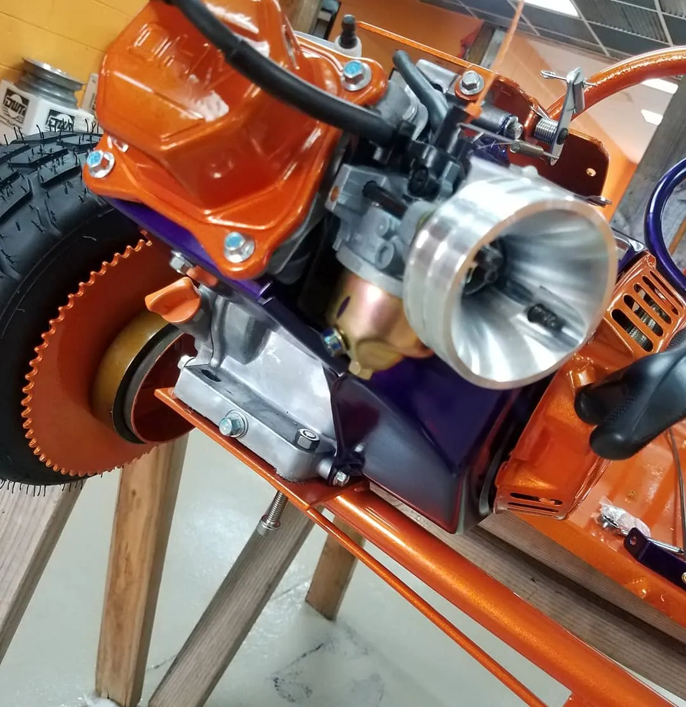
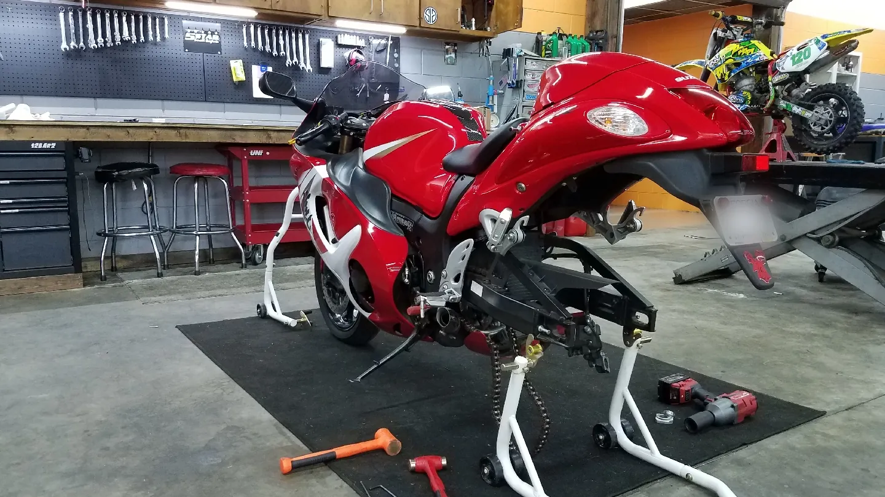
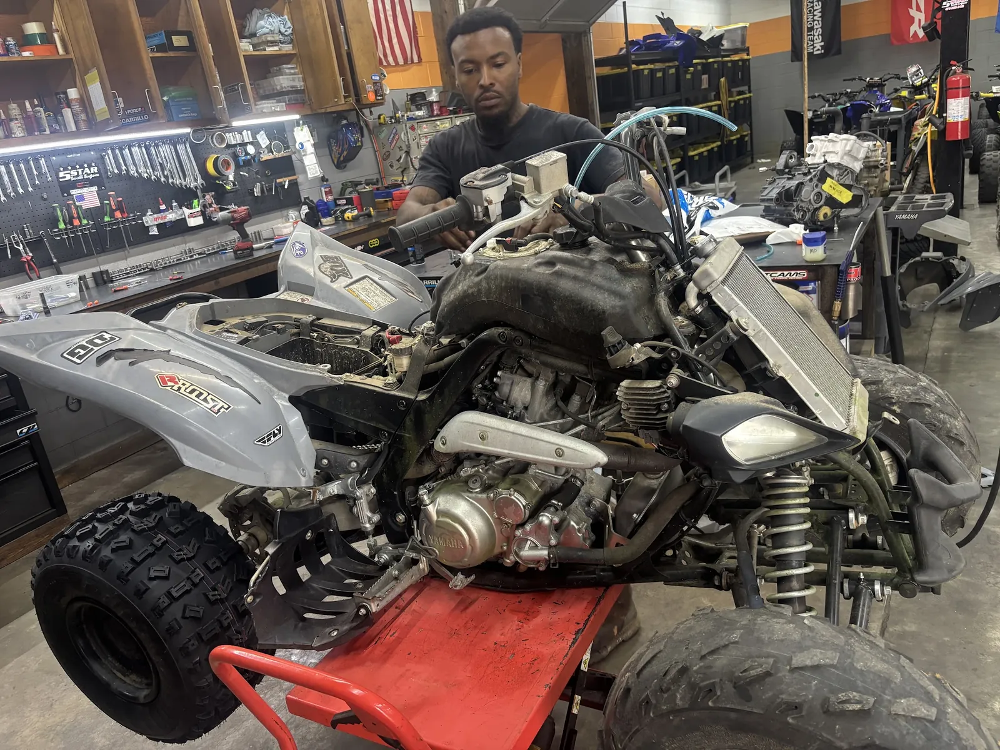
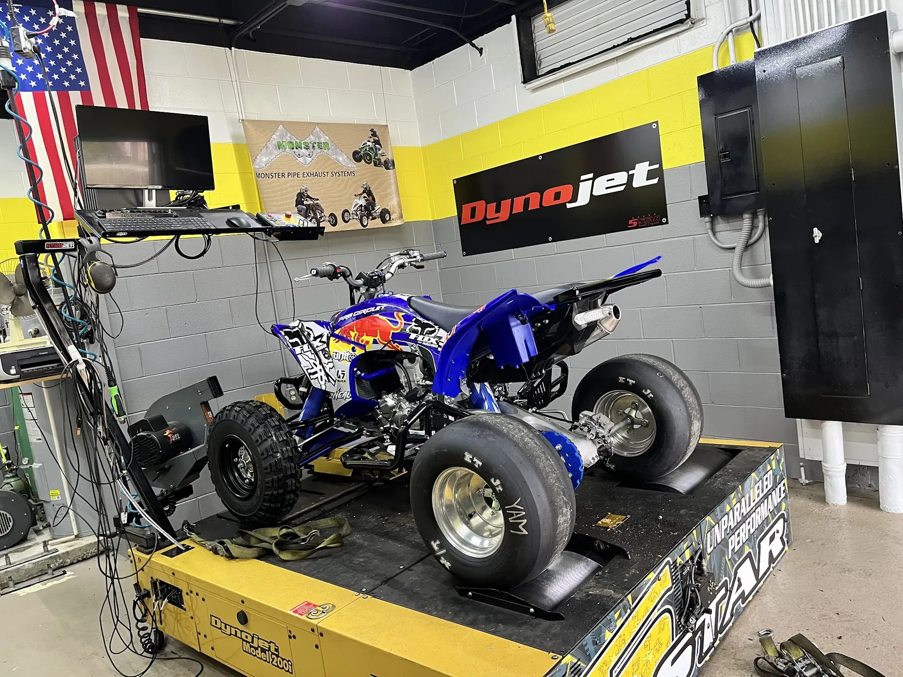
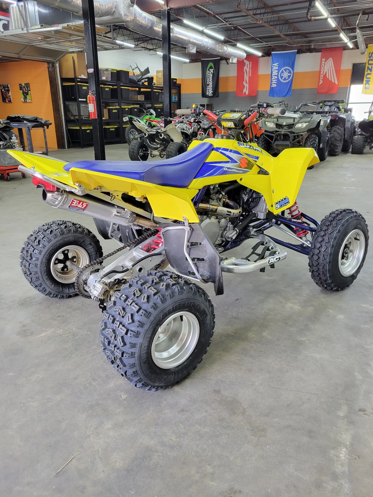

Everything from a carb clean to a full engine build and a dyno-tuned finish, for ATVs, motorcycles, side-by-sides, jet skis, golf carts, mowers and handhelds.
When an engine is tired, knocking or blown, the shop tears it down, measures it and builds it back up: top ends, bottom ends and complete overhauls for quads, bikes and small engines.
Engine overhauls
Top & bottom ends
Cylinder & head work
Measured, not guessed

02 · Carburetor work
02
Carburetor work
Hard starts, rough idle and a machine that won’t pull clean usually trace back to fuel. Carburetor rebuilds, cleaning and jetting are everyday work here.
Carb rebuilds
Cleaning & jetting
Idle & starting issues
Small engines too
“I have nothing but great things to say about these guys ive been dumping money into my bike time after time only to be disappointed but I finally found someone that can work on carburetor's and tune is perfect i appreciate the great work Mitch and his team......”Trsvis Ward · Google review

03 · Tune-ups & service
03
Tune-ups & service
Oil, filters, plugs and a once-over that catches small problems before they turn into big ones. Oil changes are listed right on their Google profile.
Oil changes
Filters & plugs
Preventative maintenance
Seasonal service
“5 Star has repaired and serviced multiple things for us, 4 wheeler, golf cart and jet ski and always do a great job. I've also referred friends and family who have used others and needed to find a better service and they're so thankful I got them to Mitch and 5Star, they always do it right the first time😁 …”Angie Tolbert · Google review

04 · Electrical & bog diagnosis
04
Electrical & bog diagnosis
An intermittent bog or an electrical fault that comes and goes is the kind of problem other shops throw parts at. Here it gets diagnosed, explained and fixed.
Intermittent bog diagnosis
Electrical troubleshooting
No-start problems
Clear explanations
“Hands down greatest shop with zero complaints. Customer service was great throughout the diagnosis, and even took the time to help me with understanding preventative maintenance I can do to stop future problems. Very knowledgeable and no complaints on my end. Happy to be a repeat customer in the future.”Corey Turner · Google review

05 · In-house dyno tuning
05
In-house dyno tuning
A Dynojet dyno lives in its own cell in the shop, so tuning is measured on the rollers instead of guessed on the road. Customers tow race quads in from hours away for it.
Dyno tuning
Quad & bike tuning
Before & after pulls
Race quads welcome
“Mitch went above and beyond and I really appreciate him. I took my LTR450 in to be dyno tuned today. It was a 3 hr drive and well worth it. Even when he wasn't able to tune it because the bike had a problem i was unfamiliar with; he fixed the problem and then clean her up and she is riding wonderfully. Very knowledgeable and helpful!!”Dominque Riley · Google review
Adding a pipe or a fuel programmer only pays off when the tune matches. The shop installs the parts and dials them in on the dyno in the same visit.
Fuel programmer installs
Exhaust installs
Power Commander tuning
Pipe + tune packages
“Guys got me in quick. 3 employees knocked out raptor. Pipe / power commander / dyno all within couple hours. They know their stuff. Finding a good clean shop is very hard to find. These guys are your answer”Brenton field · Google review
What are you bringing in?
Pick your machine
Tap a machine type to swing the tach and see what the shop handles for it.
ATVs & quads
Repair, service and tune-ups
Engine rebuilds and carb work
Pipes, programmers and dyno tuning
Sport and race quads welcome
ATV repair is their primary Google category.
Motorcycles & dirt bikes
Service and repair
Carburetor work and tuning
Dyno tuning
Diagnosis of bogs and electrical faults
Listed as a Motorcycle Repair Shop on Facebook.
Side-by-sides
Repair and service
Tuning
“ATV, Motorcycle, SXS Repair+Service+Tuning” from their Facebook bio.
Jet skis
Service and repair
Jet ski is on the shop sign, and reviewers mention jet ski work.
Golf carts
Service and repair
Reviewers mention golf cart repairs.
Mowers & small engines
Small-engine repair
Carb cleaning and tune-ups
Engines like Briggs & Stratton, Kohler and Kawasaki
As listed on their GreenPal profile.
Handheld equipment
Trimmers, blowers and saws
Brands like Stihl and Echo
As listed on their GreenPal profile.
How it works
From drop-off to ride-out
No runaround, no part-swapping guesswork. Here is how a typical job goes.
Call or roll in
Call (478) 808-3415 or bring the machine by during shop hours, Tuesday to Saturday.
Diagnosis
The problem gets tracked down properly, so you are not paying for part after part.
A straight answer
You hear what is wrong and what it takes. As their GreenPal listing puts it: “If it’s fixable, I’ll get it running; if it’s not worth the money to fix, I’ll tell you straight.”
The work
Repair, rebuild or performance parts, with dyno time when the job calls for it.
Ride out
Pick it up running right, with tips to keep it that way.

Lizella · Macon area
Not sure what it needs?
Describe the problem on the phone or send a quick service request and the shop will take it from there.